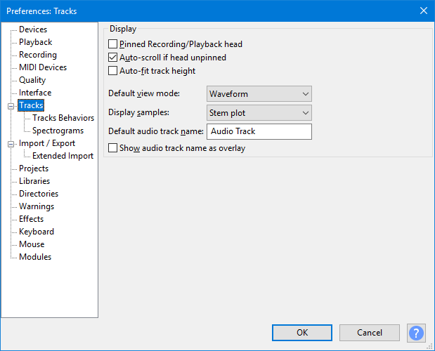
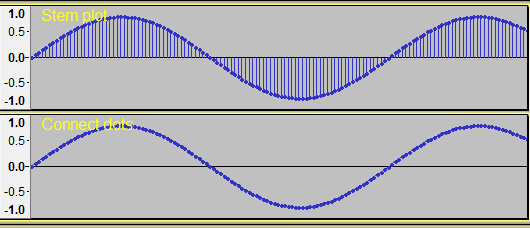
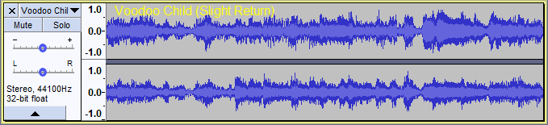

Tracks Preferences
- Accessed by: (on a Mac )
- 
- Tracks Preferences.
- Click on any other Preferences sections in the above image to read about those Preferences.
Display
- Pinned Recording/Playback head:You can change Audacity to play and record with a fixed head pinned to the center of the Timeline. In this mode the head remains static and the tracks will move as the audio is played or recorded.
- Auto-scroll if head unpinned: If Pinned Recording/Playback head (see above) is unchecked as per default, this option scrolls the Timeline leftwards during standard play or recording when the playback or recording cursor reaches the right-hand edge of the project.
Most users would keep this setting enabled. Turning it off:
- may prevent interrupted playback or recording on slower computers
- lets you drag the horizontal scrollbar at the bottom of the window to a new position then restart playback from there
- halts Scrubbing and Seeking playback when the playhead reaches either edge of the visible project
- prevents losing sight of a selection edge when making loops
- makes it easier to listen repeatedly from a particular start point without its visible surroundings changing.
This preference may also be turned on and off during playback using the Timeline right-click menu.
- Auto-fit track height: Tracks will be automatically resized to fit in the vertical space of the project window if possible. All tracks that have not been collapsed using the Track Collapse Button or Collapse All Tracks menu item are resized so that each separate waveform has the same height. Accordingly mono tracks will have the same height as each other and stereo tracks will have the same height as each other (twice the height of the mono tracks).
- Default view mode: Choose the default view for all newly-created audio tracks. The choices are the same as those available in the Audio Track Dropdown Menu.
- Display samples: This setting changes how Waveform and Waveform dB views are displayed. It only affects the appearance of the waveform when you are so far zoomed in that you can see the individual sample dots. At lower zoom levels it makes no difference.
- Stem plot: This is the default setting which draws a vertical line from the track center line to the sample dot, giving a clearer impression of the relative amplitude of the samples. As seen in the images below, when zoomed out close to the minimum for a stem plot, the horizontal distance between sample dots may be more uneven than seen with the connect dots default. Uneven spacing is due to "aliasing", but zooming in further will equalize the spacing whether choosing Connect dots or Stem plot.
- Connect dots: This is alternative setting yields a waveform where each sample dot is connected to the next sample by a line drawn between them.
- 
- Default audio track name: The default name that Audacity will use for new audio tracks other than imported files. The Audacity default name is "Audio Track".
- Show audio track name as overlay: When this is enabled the audio track name is displayed superimposed in yellow at top left of all audio tracks. Note that the track name is always shown in the Track Control Panel but will be truncated if the name is too long to fit.
- 